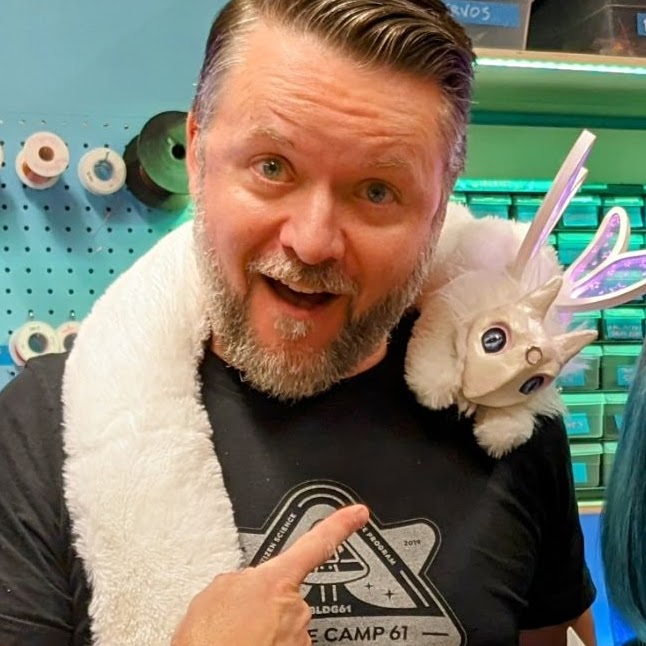
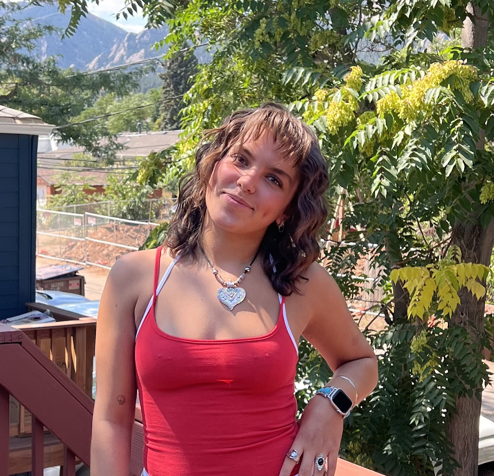
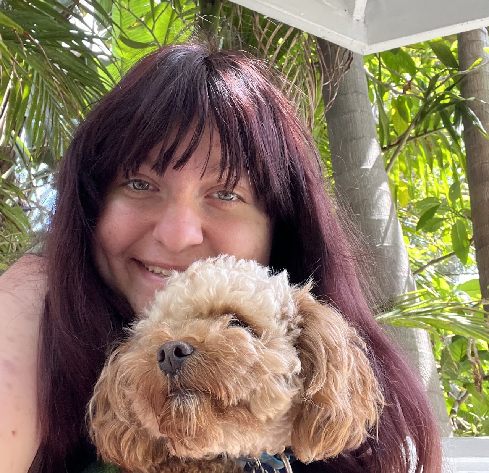
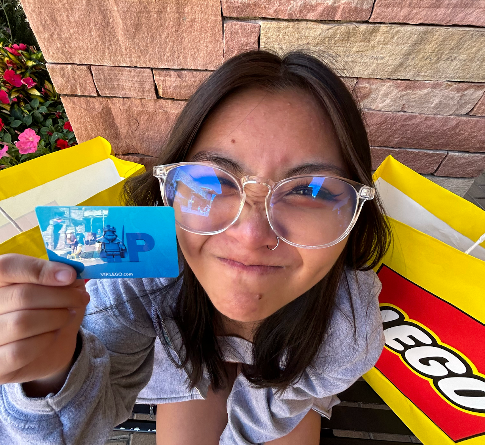
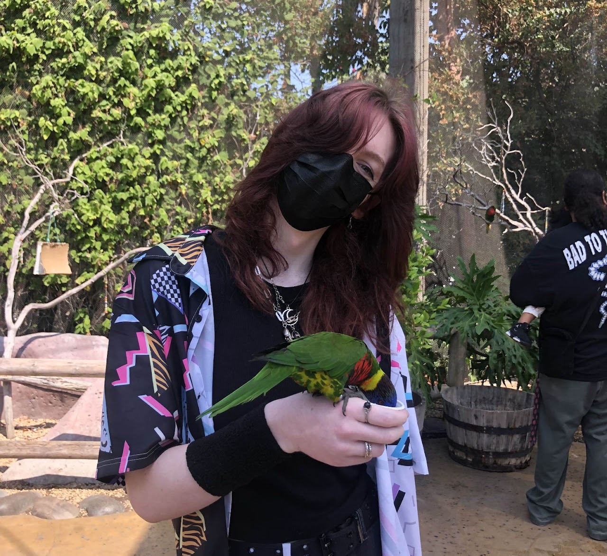
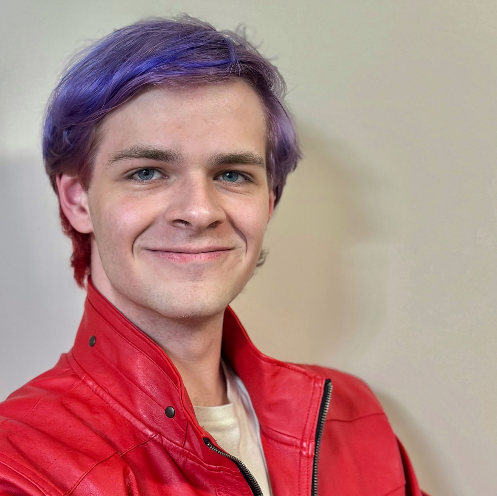
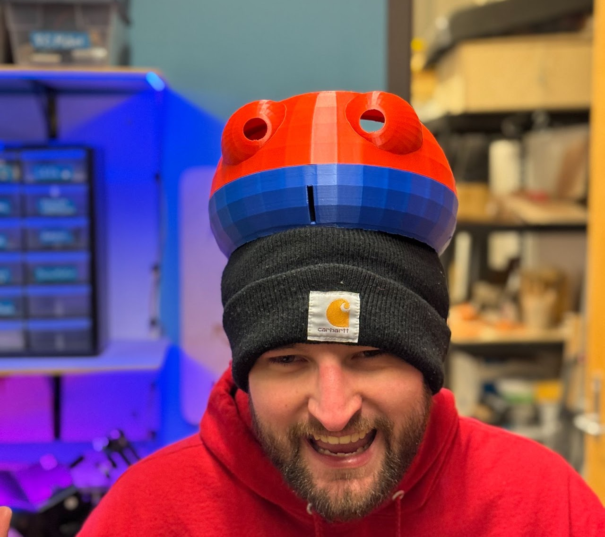

Zack Weaver
Director, BTU Lab | Assistant Teaching Professor, ATLAS Institute
Zack can help with general tools, woodworking, sewing and textiles, electronics, lasers, 3D printing, CNC tools, and more.
Use this directory to contact BTU staff about your interests or questions. Next to each person's image, is a list of things they can help you with, and their contact information.
Reach out! We love to help. Become part of the team! Email Zack Weaver if you're interested in sharing your skills with the community.

Zack Weaver
Director, BTU Lab | Assistant Teaching Professor, ATLAS Institute
Zack can help with general tools, woodworking, sewing and textiles, electronics, lasers, 3D printing, CNC tools, and more.

Bella Consentino
Undergraduate Student, ATLAS Institute
Her skills include woodworking, electronics, lasers, soldering, sewing, 3D printing, 3D modeling, Adobe software, and programming.

Keturah Dunn
Undergraduate Student, ATLAS Institute
Her skills include 3D printing, 3D modeling, and basic sewing.

Vani Chhay
Undergraduate Student, ATLAS Institute
Her skills include general tools, electronics, prototyping, 3D printing, soldering, and programming.

Terri Hughes
Undergraduate Student, CMCI
Her skills include general tools, sewing, fabric dyeing, 3D modeling, 3D printing, woodworking, and soldering.

Leo Heuring
Undergraduate student at the ATLAS Institute.
His skills include 3D printing, 3D modeling, CAD, electronics, soldering, PCB design, programming, and fabrication.

Sage Morgan-LaRosa
Undergraduate student at the ATLAS Institute.
sage.morgan-larosa@colorado.edu
Their skills include 3D modeling, 3D printing, programming, electronics, and general tools.